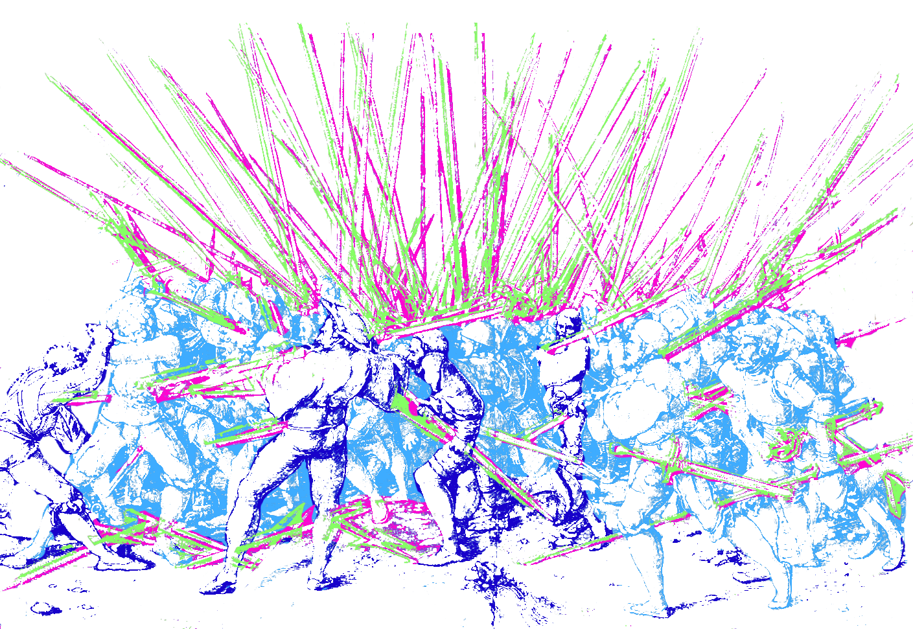

Beyond the Book
“Story is the centre without which the rest cannot hold.”
- Jonathan Gottschall, The Storytelling Animal1
What is a story? On paper a story is an account of a series of related events or experiences. 2 But what if it is not on paper? Story is humanity’s native language. It goes beyond plot-based narratives to encompass living experiences of daily interactions. This research will reveal the power of stories in daily life, economy, and ultimately culture, looking at story-driven experiences from the iPhone to the ill-fated Fyre Festival.
From Don Norman’s conceptual models to floppy disks, the brain finds—or invents—meaning everywhere. Examples of how story is the lens for understanding the world will show how designing products—that is any physical or digital article, software, or system—is a powerful form of storytelling.
The line between consumer and creator has blurred thanks to modern technology. This means even greater power—and control—through stories. Looking at participatory culture and how the medium is the message, the full scope of this power will be revealed by examining the impact of experiences as stories, rather than only the content within them. That is the true power of stories. A power that shapes the world.
Our Native Language
“We are, as a species, addicted to story. Even when the body goes to sleep, the mind stays up all night, telling itself stories.”
- Jonathan Gottschall, The Storytelling Animal
Humans are hardwired for story. Stories are common to every known culture and have existed for as long as people have walked this earth. Paleolithic art depicts hunts, rituals, and local fauna painted on cave walls; relating warnings or sharing secrets of the earliest of societies, far predating any written narrative. The epic poem of Gilgamesh, spanning twelve clay tablets engraved with cuneiform, the oldest known writing system, can still be consumed today (post translation) alongside modern bestsellers—only now on a new kind of tablet.
Spanning time and place, culture and language, stories are central to how the mind works. In the same way the brain detects patterns in visual or audio stimuli, identifying a face amongst abstract shapes, the imagination sees patterns of information and fashions them into a story. Story is the human language, whether told around campfires or in live tweets. It is not only found in the narratives people read, write, or hear; it is the lens through which they make sense of the world. Jonathan Gottschall, a scholar specialising in literature and evolution, examines this in The Storytelling Animal. “Studies show that if you give people random, unpatterned information, they have a very limited ability not to weave it into a story,” he points out. “Our hunger for meaningful patterns translates into a hunger for story.”ibid
In 1944, Fritz Heider and Marianne Simmel demonstrated human’s natural story engine in their Experimental Study of Apparent Behavior.3 Participants were shown a short animated film and told to describe what happened in the picture where three shapes bounce around a box.
What happened? Was it a big triangle, a small triangle, and a circle bouncing in and out of a box? Or did a grand drama unfold, the tale of belligerent bully’s fight with a young hero over a lover centred around their humble home? Out of 34 people in the first group from the study, only one described the film in purely geometric terms. All other participants assigned anthropomorphic qualities and interpreted the movements of abstract shapes as the actions of animate beings playing out a connected story of aggression and heroism.
The Quest for Meaning
“Everything happens for a reason, doesn’t it? Even if you don’t consciously agree with that statement, your brain sure does.”
- Seth Godin, All Marketers Are Liars4
The human propensity to impose meaning and structure—in other words, a story—on any series of events, no matter how meaningless, is similarly demonstrated in the Kuleshov effect.5 In the early 1900s Lev Kuleshov created a film of silent images: a coffin, a bowl of food, a woman. In between each of these scenes, Kuleshov added an actor’s face.
Demonstrating the power of visual storytelling, the audiences that saw the film believed the actor’s expression to change each time based upon the juxtaposition with the preceding footage. In reality, the same shot of the actor was used each time. Addicted to story by nature, humans cannot help but create meaning even where none exists. Conscious or not, real or fabricated, the mind cares not: it sees stories everywhere. The impact of this extends beyond film. If people understand the world through storytelling, then everything within the world—including everyday interactions with products— is a story.
Tales Immortal
“User experience doesn't happen on a screen; it happens in the mind”
- John Whalen, Design for How People Think6
Don Norman, co-founder of the Nielsen Norman Group and one of the world’s most influential designers according to Business Week7, explores this human translation of systems into stories in his seminal book, The Design of Everyday Things.8 He proposed ‘conceptual models’—what users believe about a system—as a basis for design. “People are innately disposed to look for causes of events, to form explanations and stories,” Norman explains. “Conceptual models are a form of story, resulting from our predisposition to find explanations.” They are the internal story people form in their brains about how a product works. According to Norman, “…everyone forms stories (conceptual models) to explain what they have observed. In the absence of external information, people can let their imagination run free as long as the conceptual models they develop account for the facts as they perceive them.” Based in belief rather than fact, the imagined model may bear no resemblance to the reality of how the system functions.
The once ubiquitous floppy disk is an example. First developed in the 1970s, little more than three decades later 98% of computer sold did not contain drives for the short-lived disks.9 However those same computers that spelled the death of the physical floppy disk still immortalised it in the form of the save button. As an image, the floppy disk was a visual representation of a conceptual model. Even though no data was being written to floppy disks when the button was clicked, they were a familiar metaphor playing into people’s understanding of how the world worked. Years later in a survey of 1,000 schoolchildren, only 14% knew what the button represented.10 The conceptual model evolved as a new generation did not understand the metaphor but learned or created a narrative for how the system worked. In the same way oral traditions passed down stories through the generations, conceptual models and the stories of how things work can be learned and evolve from other people and systems.
To counter friction, errors, and mixed up mental models resulting in unpleasant experiences with everything from save icons to booking a holiday, systems must be designed with the audience and story in mind. If people model products as stories in their minds, the narrative they tell themselves, regardless of fact, impacts how they use the product. The best way to design then, is to tell a story. In that way, products becomes a form of storytelling. The result: stories made to be experienced.
Experience as Story
“Lord! When you sell a man a book you don’t sell him just twelve ounces of paper and ink and glue—you sell him a whole new life. Love and friendship and humour and ships at sea by night—there’s all heaven and earth in a book, in a real book I mean.”
- Christopher Morley, Parnassus on Wheels11
An experience can be any event or occurrence that leaves an impression. In that way, people experience watching a film, engaging with a service, or using products. Their storytelling brains break these down into a sequence where every impression has meaning. Experiences then are a story people participate in and engage with, becoming all the more memorable and shareable for it. This is how—for participants and businesses—experiences become valuable.
The Experience Economy
In Welcome to the Experience Economy, Joseph Pine and James Gilmore argued that experience was replacing the service economy.12 In the new economy, memories become the product and to survive businesses must create offerings that engage, thrill, and immerse customers. Pine and Gilmore describe experiences as occurring “…when a company intentionally uses services as the stage, and goods as props, to engage individual customers in a way that creates a memorable event. Commodities are fungible, goods tangible, services intangible, and experiences memorable.”
Today, the experience economy is firmly established. 78% of millennials—people born between 1981-1996—say they would spend money on a desirable experience over buying goods.13 This experience craving is not limited to one generation either. Since 1987, there has been a 70% increase in the share of consumer spending on live experiences relative to total U.S. consumer spending. Why experiences? According to the same Eventbrite & Harris study, a few key reasons stand out: “In a world where life experiences are broadcasted across social media, the fear of missing out drives millennials to show up, share and engage.” Almost 70% of those surveyed said attending events made them feel more connected to a community and the people around them. This is the similar to the classic attraction of storytelling: tales woven around campfires designed to bring people together and teach shared values. Since story is how humans translate and share everything, all experiences are a form of story. Story also being what the brain craves, this foundation helps explain experiences’ rise to underpinning economy.
Be the Hero
In The User’s Journey, Donna Lichaw looks at this concept of designing for experiences by designing for story.14 “We use story because it’s one of the oldest and most powerful ways that humans have to communicate with and understand the world,” Lichaw explains. She points out that everything is a story, from walking down the street to using an app or setting up a bank account. “Whether you plan for it or not, your customers use their story-driven brains to understand your product and what it’s like to use your product. They also use their story-driven brains to tell others about your product. The better the story, the better the experience, the better the word of mouth.”
Thinking of experiences as stories, the quality of that overarching narrative determines the quality of the experience and, in the experience economy, its value. Stories put people at the centre. Few know this better than Apple. While hardware is technically what they create, what they sell is story.
In the original iPhone announcement Steve Jobs invited the audience to be participants in a story, declaring they would “make some history together today”.15 The iPhone was not the first smartphone—at launch it even had less features than competitors on the market—but that didn’t matter because the iPhone was not a phone; it was a compelling story. “The iPhone isn’t the star—rather, you are the star as you envision all of the things that you could do with this device in your hand,” Donna Lichaw says, reflecting on the release. “A good story is good design.” The best experience is a story where the user is the hero. Kathy Sierra echoes this in Badass: Making Users Awesome. She argues that successful products are not about better features but about how amazing the people using the product feel.16 Or in other words, how ‘badass’ the story they experience makes them feel.
Stories are why experiences rule the economy today. “We drink the can, not the beverage”, to quote Seth Godin, member of the American Marketing Association's Marketing Hall of Fame.ibid “Stories (not ideas, not features, not benefits) are what spread from person to person.” Taking advantage of the native language of humanity, experiences as stories can spread from mind to mind. That power cannot be underestimated. If an experience can tap into a human’s story craving brain, it takes root and spreads. Even when the story is a fantasy.
Marketing Myths
In December 2016, images of what seemed to be the same luxurious island holiday began appearing on the Instagram, all tagged ‘Fyre Festival’. The beginning of a viral marketing campaign for an “immersive musical festival”.17 Fyre Festival was a story within a story. Originally devised by Billy McFarland and Fyre Media, it was supposed to promote the Fyre app. To sell this marketing story, they concocted another. Fyre Festival tapped into that fear of missing out which helps drive the experience economy, portraying a “once-in-a-lifetime musical experience”. They sold a fantasy: “a place where the tropical sun shines all day, and our celebrations ignite the night. This is an invitation to unplug, connect with something deeper, and hunt for something bigger.”
And it was a fantasy. The actual experience left thousands of people stranded in the Bahamas without a festival to attend. Instead they got cheese sandwiches in the rain and a limited number of cheap tents. That is a disaster even before taking into account the money defrauded from investors and many of those who contributed work for the festival.18 Fyre Festival sold an experience that didn’t exist. It didn’t matter, because the story made it real and made it sell. Well-crafted stories are so effective that, as in the case of Fyre, no one doubts their integrity. The narrative takes on a life of its own, more potent than any evidence. A living experience.
What went wrong with the Fyre Festival is as memorable—if not more so—than what could have gone right. As Pine and Gilmore said: “The easiest way to turn a service into an experience is to provide poor service—thus creating a memorable encounter of the unpleasant kind.” Stories make or break experiences which form the basis of the economy. Whether an iPhone or an immersive musical festival, the most memorable experiences are the most valuable. To make an experience memorable, it must be designed as a story. In that way, stories shape economy. But their power does not end there.
The Power of Storytelling
“Unceasingly we are bombarded with pseudo-realities manufactured by very sophisticated people using very sophisticated electronic mechanisms. I do not distrust their motives; I distrust their power.”
- Philip K Dick19
Stories are everything. They are the brain’s native language and leverage that predilection to sell anything. A force which, consciously or not, shapes perception and the economy. A direct line to the brain is a source of unimaginable power. That power can do so much more, and is more widely available, in today’s world of experiences. Frank Rose detailed how the digital revolution is remaking the way stories are told in The Art of Immersion.20 He argues that a new type of narrative is emerging thanks to the internet: “one that’s told through many media at once in a way that’s nonlinear, that’s participatory and often gamelike, and that’s designed above all to be immersive.” It is a format more in common with oral storytelling because it is “inherently participatory—not just interactive, in the sense that it responds to your commands, but an instigator constantly encouraging you to comment, to contribute, to join in”.
This participation makes a narrative more immersive and powerful. Henry Jenkins, an American media scholar, describes participatory culture as a world “where we take media into our hands” and everyone participates.21 He contrasts it with the concept of “passive media spectatorship”; individuals are no longer consumers only but participants and creators alongside the media producers who used to solely occupy this role. This shift blurs the line between consumer and creator. Jenkins defines the move as key: “interactivity is a property of the technology, while participation is a property of culture.” This means it extends beyond, and predates, the internet or any one technology.
Living Stories
“People have always wanted to in some way inhabit the stories that move them. The only real variable is whether the technology gives them that opportunity.”
- Frank Rose, The Art of Immersion
Henry Jenkins traces participatory culture back to the 19th century and printing press, when young people began producing their own works. However, the concept of a single author with total ownership is not an ancient default. In The Medium is the Massage, Marshall McLuhan points out that “‘Authorship’ — in the sense we know it today, individual intellectual effort related to the book as an economic commodity—was practically unknown before the advent of print technology”.22 Stories, then, transcend a distinct line between creator and consumer. What has changed isn’t stories but the tools and ease with which people can respond to and participate in them. Frank Rose used marketing as a modern example. “People don’t passively ingest a marketing message, or any type of message. […] They don’t just imbibe a story; they imbue it with meaning. Which means that perceptions of a brand aren’t simply created by marketers; they’re ‘co-created’. […] the author starts the story; the audience completes it.”
One medium where this can be observed is Twitter. Currently it is possible to follow Iron Man, Spongebob, Homer Simpson, or Lord Voldemort, to name a few.23 Together, they weigh in at more than eight million followers. Some are run by the associated companies but others are the work of fans, creating parodies or even continuing the stories authors started.
During a White House chat when staff answered questions on Twitter, Joshua Lyman received an answer from then US Vice President Joe Biden on a policy proposal.24 Not unusual except Lyman is the fictional Chief of Staff from The West Wing, an American political drama that ended in 2006. Lyman only stopped tweeting in 2017. Josiah Bartlet, the fictional President from the same show, is still tweeting and actively shares opinions on current political affairs to his nearly 70,000 followers.25 Opinions expressed through a character created by writers and run by an unknown fan. In a participatory culture, the audience can do so much than complete the story the author starts. They can take that power into their own hands.
Editors Unseen
As barriers break down, does that mean power is truly distributed? Not according to Jenkins. “Not all participants are created equal. Corporations—and even individuals within corporate media—still exert greater power than any individual consumers or even the aggregate of consumers.”26 And just how great is that power?
Marshall McLuhan coined the phrase “the medium is the message” in 1964 to describe how the medium itself, not just the content, is a message which is more often overlooked in favour of the narrative within.27 “Environments are not passive wrappings, but are, rather, active processes which are invisible.”ibid As seen from how the human brain processes events to the iPhone, the story is not just the content but the overarching experience. Twitter itself becomes the story—with all the power that brings—not just the content that is shared on the platform. That story may control choices (as in Twitter’s character limit), choose what you see (as in Facebook’s targeted advertising), or even shape how you see it (as in Instagram’s polished feeds, creating an experience where everyone can bombard everyone else with their own version of reality and, as a result, is ranked the worst for young people’s mental health28). In an experience without authors, there are still editors.
The Battle for the Mind
“Often by controlling our choices, code in our lives exerts an almost more profound regulatory effect than law can ever hope to.”
- Tim Wu29
Stories—as seen in their power to shape perception, experience, economy, and culture—are not an innocuous toy. The same power of stories that makes experiences more effective, memorable, and valuable can also make them more persuasive, addictive, and capable of moulding minds. In the words of Jonathan Gottschall: “…what is more impressive, if harder to see, is the way stories are working on us all the time, reshaping us in the way that flowing water gradually reshapes a rock.”
This sculpting power of immersive, participatory stories was revealed by Melanie Green and Timothy Brock’s Transportation Theory.30 The study looked at the persuasive power of narrative, describing the human tendency to become absorbed in a narrative and the effects. In it they observed “transported consumers frequently displaying increases in story-consistent beliefs, attitudes, and behaviors”. In other words, the more immersed people become in a story, the more the story shapes them.
“If the storyteller is skilled, he simply invades us and takes over,” Gottschall points out. “There is little we can do to resist aside from abruptly clapping the book shut.” But what happens when there is no book to shut? In the world today, participatory, immersive stories are all around, all the time. Narrative is how the brain works, it cannot be shut like a book. These stories become all the more powerful—and persuasive—when they go unrecognised as such. When the experience is not seen as the story itself, the mind can be absorbed and shaped by a narrative without ever consciously entering it. Fyre Festival was a disaster when you look at the content of the experience. The overarching story, however, was a massive success. It worked partly because many of the people involved and even working on the event did not realise it was a fraud. They believed their own story.
The Reality of Fiction
Philip K Dick recognised power, as a writer crafting his own realities which far outlived him. “They [the creators] are victims of their own product, along with us. […] We have fiction mimicking truth, and truth mimicking fiction. We have a dangerous overlap, a dangerous blur. And in all probability it is not deliberate. […] you cannot compel [the author] to declare what part is true and what isn’t if he himself does not know.”ibid He spoke about this reality-warping power of stories in 1978, long before the advent of social media. “The bombardment of pseudo-realities begins to produce inauthentic humans very quickly […]. Fake realities will create fake humans. Or, fake humans will generate fake realities and then sell them to other humans, turning them, eventually, into forgeries of themselves.”
Only when the overarching story is recognised in the experience, not just the content, can the full impact begin to be understood. Consuming or creating without recognising the overarching stories allows the mind to be manipulated. As minds change, so does culture. To design with the story in mind is to design with power to change not only perception but experience, economy, and culture. A power to create realities and be swept up in them without ever realising. The question is whether such power is used for good or for ill.
“…another way to control the minds of people is to control their perceptions. If you can get them to see the world as you do, they will think as you do. Comprehension follows perception.”
- Philip K Dick
Happily Ever After…?
What is a story? This essay challenged a narrow definition of storytelling, demonstrating how narrative is humanity’s native language. As a result, story forms the foundation of experience, economy, and modern culture; shaping every aspect of daily life.
Stories go beyond what lies inside a book; they are the lens through which humans understand the world. Everywhere the mind looks, it detects patterns and spins tales to make sense of them—whether true or false. As such, experiences are built upon—and a form of—storytelling. When designed as such, they can capitalise on the human addiction to narrative to sell the fantastical or false: from the iPhone to the Fyre Festival. This power drives the modern experience economy. However, story is much more than a marketing tool.
“…fiction is one of the primary sculpting forces of individuals and societies”
- Jonathan Gottschall, The Storytelling Animal
There is no longer a distinct line between creator and consumer. People can take stories, and all the power that comes with them, into their own hands. But that power is not always distributed equally and stories are not an innocuous toy. Mark Twain, American author, lamented in 1873, that “there are laws to protect the freedom of the press’s speech, but none that are worth anything to protect the people from the press”.31 Stories can be a weapon, recognised or not, from which the brain has little protection unless people learn to take the holistic view.
“We shape our tools, and thereafter our tools shape us.”
- John Culkin32
The story in the content—whether a book, film, or game—is only a small part of the overarching narrative that is every experience, from the iPhone to Twitter. The medium is a story which exerts greater control and influence over the content and people’s minds than the message it carries. When that goes unrecognised, people can become immersed in and changed by a story without ever realising it. That overarching story can shape perceptions, opinions, and culture with the same force that drives experiences and the economy. Once caught in the cycle, it can happen without either party being aware. It is possible, as Philip K Dick warned, to wind up with “…fake humans inventing fake realities and then peddling them to other fake humans. It is just a very large version of Disneyland.”
Stories shape perception, experience, economy, and culture. Today it is easier than ever to broadcast a story—10 year olds have access to the same devices and social media as presidents and prime ministers—but to fully understand that power the story must be recognised not just in the content but the experience controlling what is shared.
Jonathan Gottschall warned that “the real threat isn’t that story will fade out of human life in future; it’s that story will take it over completely”. The truth is it already has. As the mind sees it, reality is just another story. Recognise that and anyone can take control of their own story or design stories which shape millions more. Wield it and find a power mightier than the sword, capable of changing the world.
The question isn’t whether stories are powerful; it’s what to do with that power.
That is up to the storyteller.
“The author starts the story, the audience completes it.”
- Frank Rose, The Art of Immersion